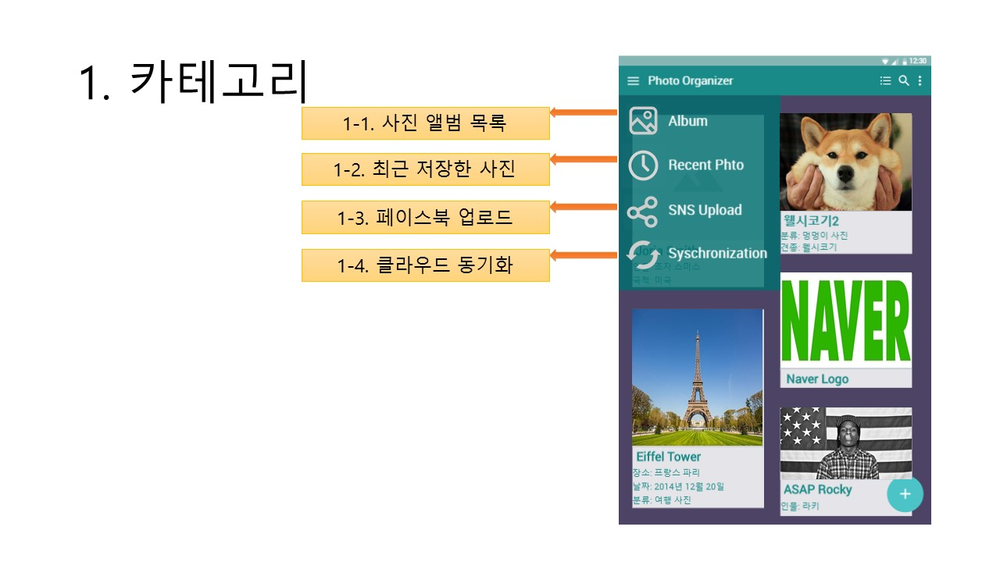
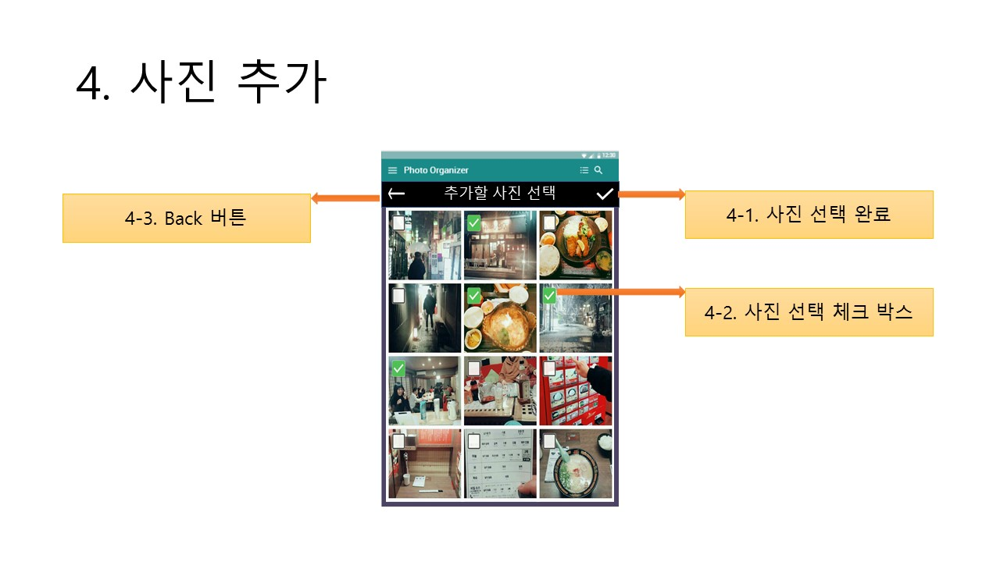
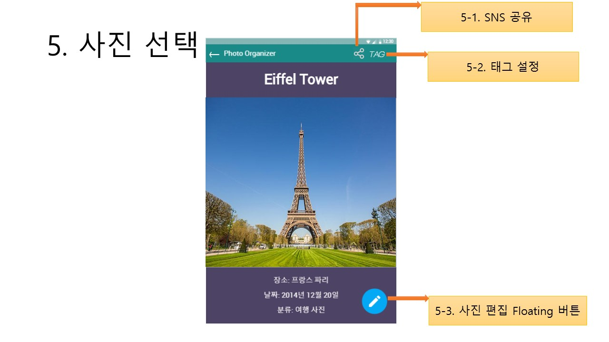
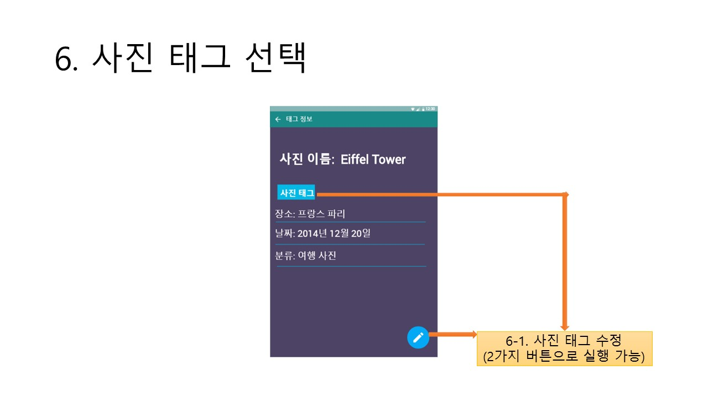

I. Refine the proposal
1. Update User Analysis
Target User Group : Novice-level User → Intermediate-level User
Platform : Window PC & Android Mobile device → Android App
내가 고안한 Photo Organizer의 UI는 Intermediate Level의 사용자에 더욱 적합하다고 판단하여
Target Group을 Novice-level 사용자에서 Intermediate-level 사용자로 바꾸었다.
또한 스마트폰 카메라와의 연동을 위해 플랫폼을 Android Application으로 한정하였다.
2. Update Functional and UI Requirements
[Functional Requirement]
1. 사진 편집 기능
2. 사진 불러오기/저장 기능
3. 사진 정렬 기능
4. 사진 태그 기능
+5. SNS 자동 업로드
[UI Requirement]
1. 전체 사진/앨범 목록을 다양한 방식으로 보여주는 기능 → 전체 사진/앨범 목록을 보여주는 다양한 view를 제공
2. 사진 선택 시 자동 화면 맞춤 기능
3. 보기 쉬운 User Interface 사용 → 복잡하지 않고 직관적인 UI 제공
4. 적절한 텍스트 크기/폰트 사용 → 적절한 텍스트 크기 및 폰트로 인터페이스 구성
+5. 사진에 집중할 수 있는 배경색 사용
3. Update the Scenarios
*** 수정 전 ***
[시나리오 1]
1. 스마트폰 카메라로 셀카를 찍자 스마트폰 화면에 찍은 사진이 어떤 앨범에 저장되었는 지 알려주는 메세지가 표시된다. (Background로 실행중인 상태)
2. 표시된 메세지를 터치하여 Photo Organizer Application을 실행시킨다.
3. 앱에서 '최근 추가된 사진' 탭에서 방금 찍은 사진을 선택하여 전체 화면으로 띄운다.
4. 사진 편집 아이콘을 클릭하고 얼굴 인식 버튼을 누르자, 앱이 자동으로 얼굴을 인식하고, 뷰티 효과를 선택하여 사진을 편집한다.
5. 편집한 사진을 저장하자, 원본 사진을 저장할 것인지 묻는 메세지가 표시된다.
6. 메세지에서 ‘아니오’를 선택하고 SNS 업로드 아이콘을 터치하자 스마트폰 화면에 성공적으로 업로드가 완료됐다는 메세지가 표시된다.
7. 홈 버튼을 눌러 어플리케이션을 종료한다.
[시나리오 2]
1. 웹에서 연예인 사진을 다운받자 컴퓨터 화면에 사진이 추가되었다는 팝업창이 표시된다. (Background로 실행중인 상태)
2. 팝업창을 클릭하여 Photo Organizer Application을 실행한다.
3. '최근 추가된 사진' 목록에서 방금 저장한 사진을 선택하여 전체 화면으로 띄운다.
4. 인물분류 버튼을 클릭하자 프로그램이 인물을 파악하여 인물정보를 사진파일에 자동으로 tagging한다. (다운받은 사진 속 인물이 이전에 저장했던 인물이라고 가정)
5. 프로그램을 다시 백그라운드로 돌리고 웹 서핑을 계속한다.
*** 수정 후 ***
[시나리오 1]
1. 스마트폰 카메라로 셀카를 찍자 스마트폰 화면에 찍은 사진이 어떤 앨범에 저장되었는 지 알려주는 메세지가 표시된다.
2. 표시된 메세지를 터치하여 앱을 실행시킨다.
3. '최근 추가된 사진' 탭에서 방금 찍은 사진을 선택하여 전체 화면으로 띄운다.
4. 사진 편집 아이콘을 클릭하고 얼굴 인식 버튼을 누르자, 앱이 자동으로 얼굴을 인식하고, 뷰티 효과를 선택하여 사진을 편집한다.
5. 편집한 사진을 저장하자, 원본 사진을 저장할 것인지 묻는 메세지가 표시된다.
6. 메세지에서 ‘아니오’를 선택하고 SNS 업로드 아이콘을 터치하자 스마트폰 화면에 성공적으로 업로드가 완료됐다는 메세지가 표시된다.
7. 홈 버튼을 눌러 어플리케이션을 종료한다.
[시나리오 2]
1. 사진을 다운받자 스마트폰 화면에 사진이 추가되었다는 메시지가 표시된다.
2. 팝업창을 터치하여 Photo Organizer Application을 실행한다.
3. '최근 추가된 사진' 목록에서 방금 저장한 사진을 선택하여 전체 화면으로 띄운다.
4. 태그 설정 아이콘을 클릭하여 사진에 인물 태그를 입력한다.
5. 입력 완료를 누르고 태그 별 정렬 아이콘을 클릭하여 해당 인물 태그로 정렬된 사진들을 둘러본다.
6. 앱을 종료한다.
4. Update the Task Model
*** 수정 전 ***
Task Model #1: 새로운 사진첩 추가
[Sequence]
1. 아이콘을 클릭하여 프로그램을 실행시킨다.
2. 사진첩 생성 버튼을 클릭한다.
3. 사진첩 테마를 적용할 건지 묻는 창에서 ‘예’를 선택한다.
4. 적용할 테마를 선택한다.
5. 사진첩 이름을 입력한다.
6. 사진첩 추가 버튼을 클릭한다.
Task Model #2: 인물사진을 선택해 뷰티 효과 적용
[Sequence]
1. 아이콘을 클릭하여 프로그램을 실행시킨다.
2. 사진 목록에서 편집할 인물 사진을 선택한다.
3. 편집 버튼을 클릭한다.
4. 얼굴에 뷰티 효과를 적용하기 위해 얼굴 인식 버튼을 클릭한다.
5. 편집 도구 중 뷰티 효과에 해당하는 아이콘을 클릭한다.
6. 뷰티 효과 종류를 선택한다.
7. 편집 완료 버튼을 누른다.
8. 저장하기 버튼을 누른다.
9. 편집한 사진을 저장할 사진첩을 선택한다.
*** 수정 후 ***
Task Model #1: 사진 태그 입력
[Sequence]
1. 아이콘을 클릭하여 앱을 실행시킨다.
2. 사진목록에서 사진을 선택해 터치한다.
3. 태그 설정 아이콘을 터치한다.
4. 태그를 입력한다. (인물 / 날짜 / 장소 등)
5. 입력 완료 버튼을 터치한다.
6. 태그 설정 완료 메시지에서 ‘확인’ 버튼을 터치한다.
Task Model #2: 인물사진을 선택해 뷰티 효과 적용
[Sequence]
1. 아이콘을 클릭하여 앱을 실행시킨다.
2. 사진 목록에서 편집할 인물 사진을 선택한다.
3. 편집 버튼을 클릭한다.
4. 얼굴에 뷰티 효과를 적용하기 위해 얼굴 인식 버튼을 클릭한다.
5. 편집 도구 중 뷰티 효과에 해당하는 아이콘을 클릭한다.
6. 뷰티 효과 종류를 선택한다.
7. 편집 완료 버튼을 누른다.
8. 저장하기 버튼을 누른다.
9. 편집한 사진을 저장할 사진첩을 선택한다.
II. Design the Interface



